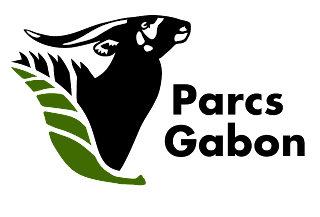
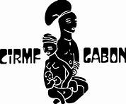

Le Jaune est la deuxième couleure du drapeau de notre pays le Gabon. Drapeau constitué de trois bandes de couleures alignées horizontalement (Vert - Jaune - Bleu).
Plus qu'une simple couleure, elle est le symbole de la richesse culturelle de notre pays.
Une culture riche et diverse qui regroupe plus d'une quarantaine de groupes ethniques.
Une mixité de groupe ethnique qui cohabitent en toute harmonie depuis le nord du pays avec les Fang. Le Sud avec les Punu et les Mitsogo, à l'Est avec les Omyénès et les Galois pour finir avec les Pouvis, Kota et Téké à l'ouest.
Les pratiques culturelles tel que les rites initiatiques ou les céremonies autoure des faits marquant les familles sont plus ou moins idantique sur la forme au sein de ces groupes ethniques.
En ce sens nous pouvons concidérer que c'est nos cultures et traditions communes qui nous unissent plus que tous.
Des cultures et traditions que nous vous invitons à découvrir à travers quelques prises de vues.
Le Moukoukoué on encore Okoyi est un est esprit de la forêt que les initiés traditionnels invoque lors des céremonies autoure des faits marquant les familles, Des céremonies d'initiation des jeune homme passant à l'âge adulte ou encore des céremonies de retrait de deuil. Il est également invoqué lors qu'il ya des palabres dont on arrive pas à trouver des solutions dans le village. Le Moukoukoué est porteur d'un méssage qui vise à structurer la société, appliquer des sentense aux malveillants et assure la protection des fils et filles du village. Il est présent et connut dans la quasi-totalité des ethnies du Gabon sous de nombreuse autres appelations de même que son apparence. En ce sens, le Moukoukoué figure à juste titre comme étant une figure emblématique de la tradition Gabonaise.
De par sa position géographique au centre de l'Afrique, le Gabon est traversé d'Est en Ouest par l'equateur. L'equateur est une ligne imaginaire qui divise le globe terrestre en deux emispheres (Nord et Sud). Les regions traversées par cette ligne imaginare sont marquées par une fort exposition au soleil. C'est d'ailleurs pour cette raison que l'on assimille la couleur Jaune de notre drapeau au soleil. Cette plancarte à été implanté dans le moyen-ogooué pour marquer le passage de l'equateur au même titre que d'autre plancarte dans la même region.
Parmis les rites initiatique présent dans la tradition Gabonaise figure en place de choix le Bwiti. Comme pouvait le dire l'illustre bwitiste pratiquant, défensseur et militant pour la réappropriation par la jeunnesse des savoirs encestraux gages de l'édification d'une société prospère, feu Maître ATOMO RIBENGA. "Si vous me demandez c'est quoi la définition du bwiti, immediatement je vous repondrais je ne sais pas...Le bwiti est ce qui est secret, inconu et inconaissable." En ces termes, on mesure clairement la dimension secret du bwiti. Ce dernier nous invite à plus ou moins parler de tradition bwiti en la definissant comme etant "Un ensemble de connaissance et de pratique qui viennent du passer primordial et qui se transmet de géneration en géneration jusqu'à nos jours." Dans cet ensemble de pratique et connaissance qui viennent du passer on note le bwiti missoko. C'est une branche du bwiti qui repose éssenciellement sur l'usage des plantes de la nature pour soigner les maux charnels et spirituels d'un individu. Dans cet image nous pouvons apprecier l'apparence propre aux bwitistes du missoko.
Au Gabon il existe plusieurs rites initiatique spécifique aux hommes et aux femmes. En plus du bwiti missoko susmentioné nous avons également le bwiti disumba. C'est également une branche du bwiti qui repose pour sa part sur la quête de soi et sa place en tant qu'être d'éssence divin sur terre. Les bwitistes du disumba effectuent lors de leurs céremonies des danses virvoltantes jumellées aux rémus des feuilles de ramot et d'enormes flambeaux de feu qu'ils arborent comme nous pouvons le voir sur ce cliché.
Source :  // 